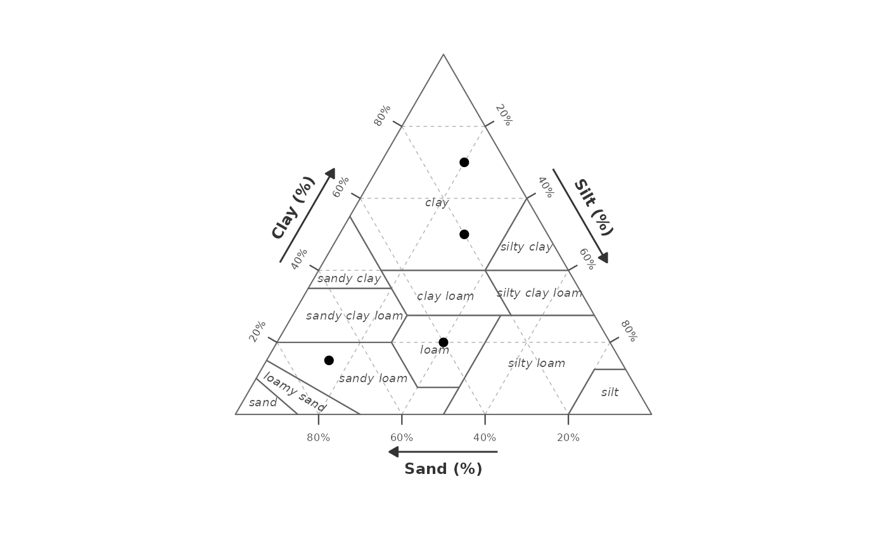
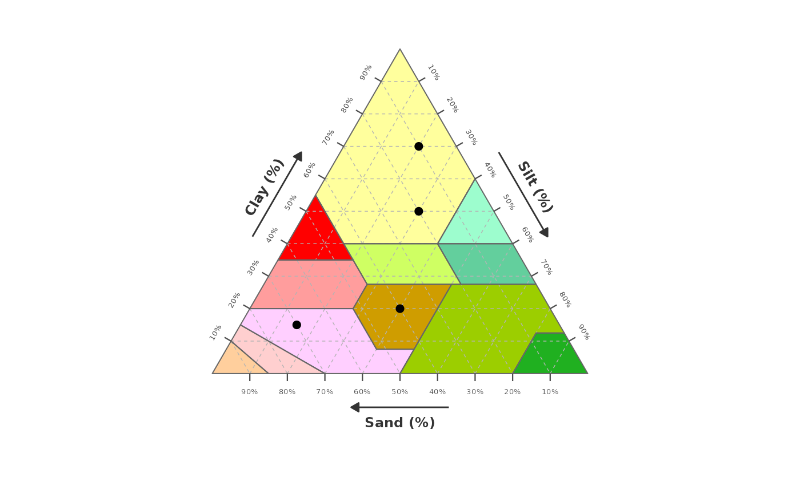
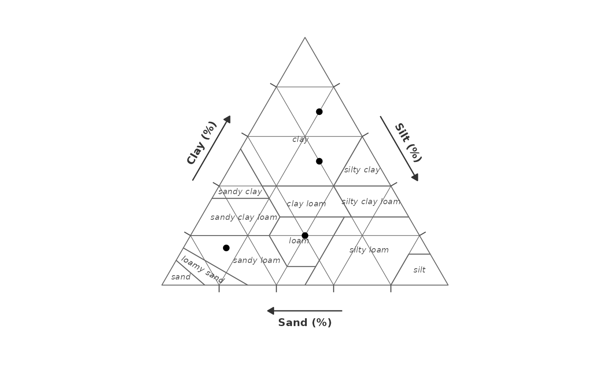

Plot a soil texture triangle with sample points
Source:R/gg_texture_triangle.R
gg_texture_triangle.RdProduces a ggplot2 object displaying a soil texture triangle with each
texture class region drawn as a filled polygon and optional sample points
overlaid. Triangle geometry is built from usda_texture_classes using
an internal ternary-to-Cartesian coordinate conversion.
Usage
gg_texture_triangle(
data,
sand,
silt,
clay,
colour = NULL,
system = "USDA",
style = c("none", "wiki"),
breaks = c(20, 40, 60, 80),
grid_colour = "grey70",
grid_linetype = "dashed",
grid_linewidth = 0.25,
border_colour = "grey40",
border_linewidth = 0.35,
tick_height = NULL,
surface = NULL,
label_style = list()
)Arguments
- data
A data frame or tibble containing sample points to plot.
- sand
Bare column name (or scalar) for sand percentage (0–100).
- silt
Bare column name (or scalar) for silt percentage (0–100).
- clay
Bare column name (or scalar) for clay percentage (0–100).
- colour
Optional bare column name to map to point colour. Pass
NULL(the default) for no colour mapping.- system
Classification system; currently only
"USDA"is supported.- style
Fill colour style for texture class polygons.
"none"(default) draws unfilled polygons;"wiki"applies the colour scheme used in the Wikipedia USDA soil texture diagram.- breaks
Numeric vector of percentage values at which to draw grid lines and tick marks (values between 1 and 99). Defaults to
c(20, 40, 60, 80). Common alternatives:c(25, 50, 75)(quarters),seq(10, 90, 10)(deciles),seq(5, 95, 5)(5 % steps).- grid_colour
Colour of the internal grid lines. Defaults to
"grey70".- grid_linetype
Line type of the internal grid lines. Defaults to
"dashed". Any value accepted byggplot2::geom_line()is valid (e.g."solid","dotted","blank"to hide the grid entirely).- grid_linewidth
Stroke width of the internal grid lines. Defaults to
0.25.- border_colour
Colour of the texture class boundary lines. Defaults to
"grey40". Set toNAto hide all class borders.- border_linewidth
Stroke width of the class boundary lines. Defaults to
0.35.- tick_height
Height of the tick marks drawn on each triangle edge, in Cartesian coordinate units. Defaults to
NULL, which auto-scales with break density. Set to0to hide all tick marks while keeping grid lines and labels.- surface
Optional. A
"texture_surface"object produced bytexture_surface(), specifying a numeric variable to interpolate and display as a continuous fill gradient across the triangle. When supplied, anystylepalette fill is suppressed in favour of the surface; the fill scale is left unset so the user can control it freely with+ ggplot2::scale_fill_*().
For iso-contour lines on top of the surface (or on a plain triangle), seegeom_texture_contour().- label_style
Named list of text styling overrides. Prefer building this with
texture_label_style()for argument completion and validation. Recognised keys:tick_showShow tick-mark percentage labels (default
TRUE).tick_sizeFont size of tick labels. Defaults to auto-scale with break density (2.2 / 1.8 / 1.4 for ≤5 / ≤10 / >10 breaks).
axis_showShow axis name labels (default
TRUE).axis_sizeFont size of axis name labels (default
3.2).class_showShow texture class name labels inside polygons (default
TRUE).class_sizeFont size of texture class labels (default
2.5).
Only the keys you supply are overridden; unspecified keys use defaults.
Examples
soils <- data.frame(
sand = c(70, 20, 40, 10),
silt = c(15, 30, 40, 20),
clay = c(15, 50, 20, 70)
)
# Defaults
gg_texture_triangle(soils, sand = sand, silt = silt, clay = clay)

# Wiki colours, 10 % grid, no class labels
gg_texture_triangle(soils, sand, silt, clay,
style = "wiki", breaks = seq(10, 90, 10),
label_style = list(class_show = FALSE))

# Solid grid in dark grey, hide tick labels
gg_texture_triangle(soils, sand, silt, clay,
grid_colour = "grey40", grid_linetype = "solid",
label_style = list(tick_show = FALSE))
